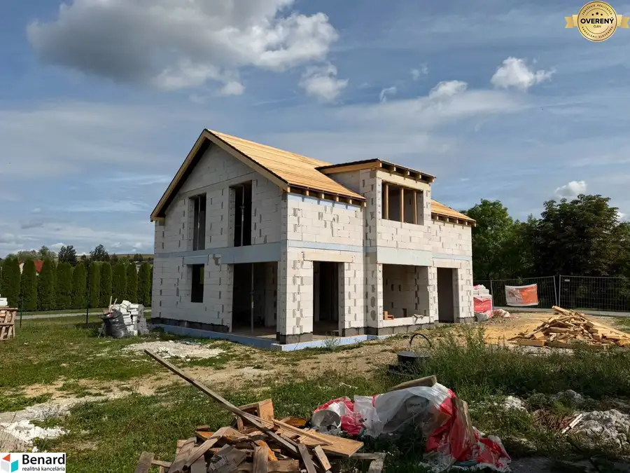
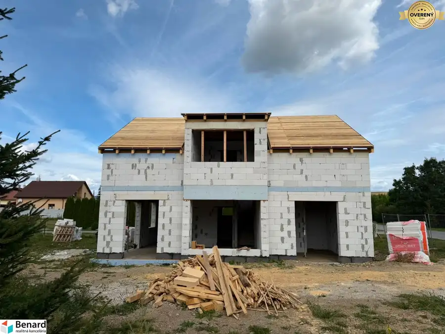
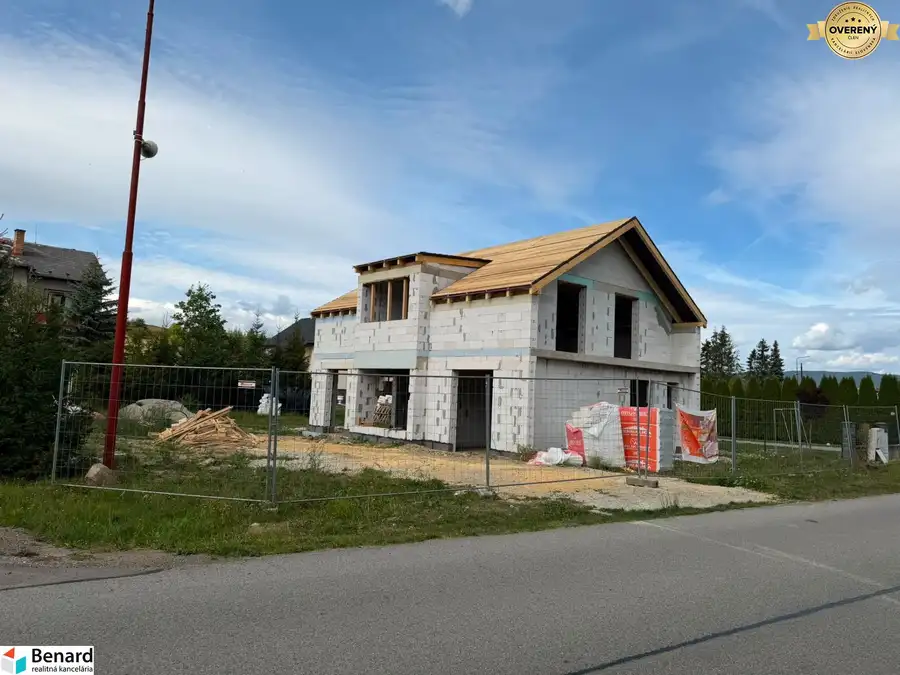
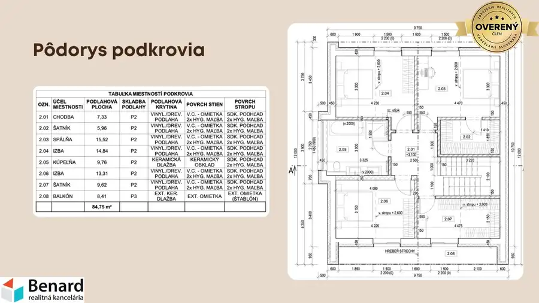
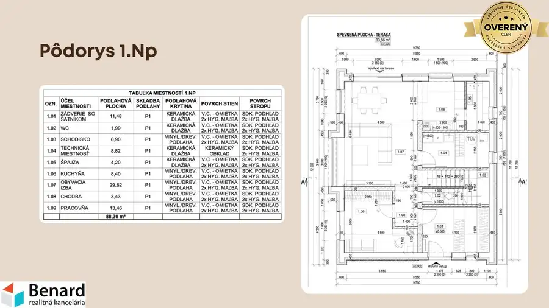
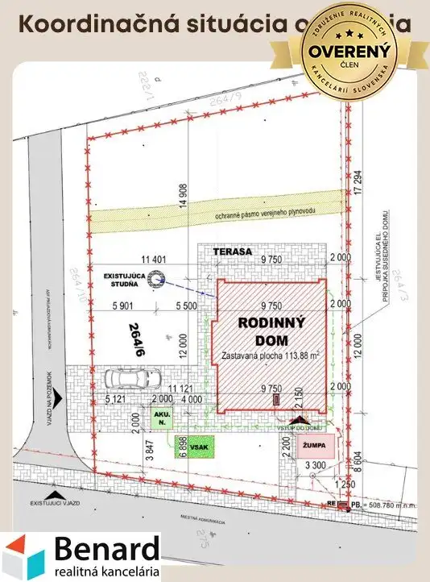

PRIESTRANNÝ 5-IZBOVÝ RODINNÝ DOM – NOVOSTAVBA






- Plocha164.84 m²
- Poschodie0. z 2
- Stavnedokončený
O nehnuteľnosti
Ponúkam na predaj rozostavaný rodinný dom v obci Ďurková, ktorý predstavuje ideálnu príležitosť pre klienta, ktorý hľadá novostavbu a zároveň si chce dokončenie interiéru a exteriéru prispôsobiť vlastnému vkusu.
Dom je aktuálne v pokročilom štádiu výstavby. V rámci dokončenia bude zrealizovaná strecha, osadené okná a zhotovená žumpa, takže nový majiteľ bude môcť následne pokračovať už v dokončovacích prácach – fasáda, vnútorné omietky, podlahy, kúpeľňa, interiérové dvere a samotné zariadenie domu.
Dispozičné riešenie:
Rodinný dom ponúka veľkorysý priestor s úžitkovou plochou 207,11 m², pričom bez terás predstavuje úžitková plocha 164,84 m².
1. NP:
zádverie so šatníkom – 11,48 m²
WC – 1,99 m²
schodisko – 6,90 m²
technická miestnosť – 8,82 m²
špajza – 4,20 m²
kuchyňa – 8,40 m²
priestranná obývacia izba – 29,62 m²
chodba – 3,43 m²
pracovňa – 13,46 m²
Podkrovie:
chodba – 7,33 m²
šatník – 5,96 m²
spálňa – 15,52 m²
izba – 14,84 m²
kúpeľňa – 9,76 m²
izba – 13,31 m²
šatník – 9,62 m²
balkón – 8,41 m²
Rodinný dom je navrhnutý ako murovaná stavba s 300 mm obvodovým murivom, zateplením a sedlovou strechou. Projekt počíta s podlahovým vykurovaním. Strecha je navrhnutá s falcovanou plechovou krytinou a zateplením.
Zastavaná plocha domu je 113,88 m².
Veľkou výhodou je existujúca studňa priamo na pozemku. Na pozemku je zároveň riešená žumpa.
Stav nehnuteľnosti:
Dom bude odovzdaný v stave, ktorý umožní novému majiteľovi dokončiť si nehnuteľnosť podľa vlastných predstáv. Po plánovanom dokončení strechy a osadení okien zostanú najmä dokončovacie práce interiéru a exteriéru.
Výhodou je, že nový majiteľ nekupuje starší dom určený na kompletnú rekonštrukciu, ale novostavbu v rozostavanom stave, pri ktorej si môže finálny vzhľad a vybavenie vytvoriť podľa vlastných predstáv.
Obec: Ďurková
Zastavaná plocha: 113,88 m²
Úžitková plocha: 207,11 m²
Úžitková plocha bez terás: 164,84 m²
Spálňa + 2 izby + pracovňa
Studňa na pozemku
Žumpa
Sedlová strecha
Projektované podlahové vykurovanie
Parametre
- Rozloha pozemku
- 782 m²
- Zastavaná plocha
- 113.88 m²
- Úžitková plocha
- 164.84 m²
- Poschodie
- prízemie
- Počet poschodí
- 2
- Stav
- nedokončený
- Status
- aktívne
- Voda
- studňa
- El. napätie
- 230/400V
- Plyn
- áno
- Kanalizácia
- žumpa
- Postavené z
- iné
- Energetický certifikát
- nie
- Terén
- rovina
- Dátum zverejnenia
- 2026-09-13